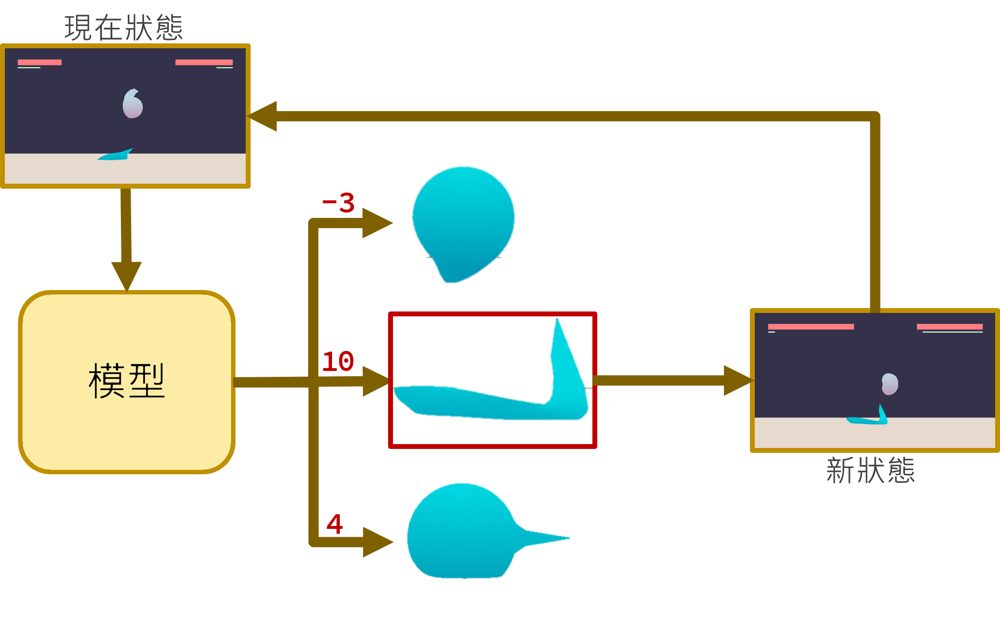

AI
of
Fighting Game
基於
目錄
不管如何，先來點影片再說吧
一般格鬥遊戲上，常有入門門檻過高與玩家間常出現嚴重的技術斷層等等問題，新手玩家連初級AI都打不贏，而老玩家面對高階AI卻依舊取得壓倒性勝利，這樣巨大的斷層會帶給格鬥遊戲的初學者巨大的挫敗感。
因此，本專題藉由強化學習方法訓練出能用於格鬥遊戲的AI，並利用調整獎勵來製作出不同風格、強度的模型，使得各種玩家都能充分享受格鬥遊戲帶來的樂趣。
這個萌新
純粹只是沒有能一起打格鬥遊戲的好友，而決定做一個出來。
邊緣人的專題往往就是這麼樸實無華且枯燥。
──煌壬虹──
運作流程
要選什麼動作好?
epsilon-greedy
機率性隨便選--探索未知的可能性
機率性選最佳--還能更好，只是你不知道
架構是由DDDQN、時間和
標題似乎混進了奇怪的東西
DDDQN
既然你誠心誠意的發問了
那就在這稍微解釋一下
結束(偽)
DQN
打斷一下
gamma是什麼？
gamma就是
gamma折扣係數
用來減少未來獎勵對現在的影響
這樣一來，就能讓估測獎勵變成

Double DQN
恩恩？？
跟DQN好像一樣啊~~
解：
DQN與Double DQN是相同的結構
然而這是實話(大致上~)
有沒有Double，差別在目標價值的計算方式
ps:因為太擠了，所以省略Double DQN的總流程
那那那那
Dueling DQN也是結構一樣，算法不同囉？
不是
Dueling DQN正如其名
是由兩個互相對抗的網路組合而成的，一個稱之為discriminator，另一個則是generator...
啊，抱歉講錯了，這是GAN才對
總結
搭配
到這專題就完成了!!
灑花~~
才怪
標題上還寫著大大的
時間和很多玄妙的東西
時間
-
收集經驗 -
訓練 -
跟fps賽跑
很多玄妙的東西
超參數
超參數
與獎勵函數
獎勵函數三要點
只要把握好這三要點
就能知道自己的模型為什麼好不起來
然而
就算知道了，模型也還是好不起來
強化式學習的核心
不要太複雜
想像是美好的，現實是骨感的
結束(真)
來自繽紛未來的展望
強化式學習還有各種方法架構
接下來希望能測試不同的方法
並搭配各式模型與獎勵函數
打造出如勁敵一般的AI
就能讓沒有朋友的邊緣人
e.g. 我
也能開心的打格鬥遊戲了
請問您現在要來點問題嗎?
報告完畢
Transition Styles
You can select from different transitions, like:
None -
Fade -
Slide -
Convex -
Concave -
Zoom
Themes
reveal.js comes with a few themes built in:
Black
(default) -
White
-
League
-
Sky
-
Beige
-
Simple
Serif
-
Blood
-
Night
-
Moon
-
Solarized